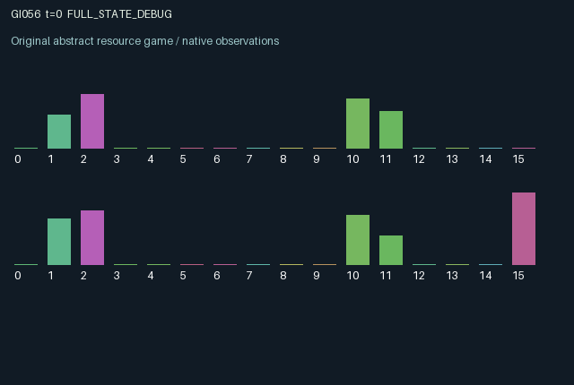

GI056 / LEGACY_ARRAY
astra-d2-00056: Bonded delivery with recipient clearance
2 agents5 actions16 observation columns32 original horizonRuntime: PASS
Release verification episode
Untrained uniform legal actions. Actual JAX state sampled along the full original episode; full-state debug camera. No human performance or learning claim.

Run this game
crucibles play --game 56
Start Python locally, then open the address printed by the terminal. Installation, multiplayer, takeover and keyboard controls →
Objective, rewards & ending
Exact task contract
{
"termination": "Original kernel t >= 32; see mechanism and source"
}Declared per-step reward bounds: -1.0 to 1.0. Observability: source_defined.
Rules
Original mechanism document (historical status wording retained)
# astra-d2-00056: Bonded delivery with recipient clearance This parentless proposal uses a generic delivery-and-maintenance mechanism. It was authored from the supplied interface contract and whitelist, with no parent source or outcome feedback. Its relationship to familiar mechanisms is bilateral service provision with a public maintenance externality and sender collateral. Structural uniqueness and mechanism eligibility remain unassessed. Actions are 0 wait, 1 pack one unit of personal material into the outbox, 2 launch the packed parcel and lock 0.75 credit, 3 clear an arriving inbound parcel, and 4 maintain the shared corridor. Every action is legal; an unmet packing or launch prerequisite makes that operation inactive. A sender may have one outbox parcel and one travelling parcel concurrently. A launched parcel starts with zero travel progress and cannot arrive during its launch step. On subsequent steps, corridor quality controls progress. The recipient must actively clear the parcel after arrival. Delivery returns the sender's collateral and benefits both parties; failure to obtain clearance by age six destroys the parcel and its locked credit. Successful clearance on that last step takes precedence over expiry. Material and small amounts of credit replenish over time. Launches wear the corridor, which also deteriorates naturally; either agent's maintenance improves both future travel times. A slot freed by delivery or expiry becomes available for launching on the following step. Each agent sees its own material, credit, outbox and current demand, both travelling parcels' progress and age, corridor quality, and recent deliveries/losses. It does not directly see the other's private material, free credit, outbox or demand. An agent's demand is resampled from the supplied step key after it receives a parcel. Travel states and receiver actions create delayed consequences and possible hold-up incentives. Maintenance and receiving consume an action that could otherwise prepare or launch personal shipments. The reward is tanh of 0.6 per own delivery, plus 0.45 times own current demand per inbound delivery, minus 0.5 per own expired shipment and small packing, launching and maintenance costs. Tanh bounds rewards within [-1,1]. Credit reimbursement is a state transition, distinct from the reward. Both agents can change persistent corridor state and determine whether the other recovers collateral. Observation columns are: elapsed time/32; own stock/3; own credit/2; own outbox; own active shipment; own progress; own age/6; inbound active shipment; inbound progress; inbound age/6; shared corridor quality; own demand; own last delivery; last inbound delivery; own last loss; role index. The terminal observation preserves the post-transition state at t=32. No learning, compiler, validation or acceptance result is asserted.
Commands
0Action 0; see mechanism and source
1Action 1; see mechanism and source
2Action 2; see mechanism and source
3Action 3; see mechanism and source
4Action 4; see mechanism and source
Roles & abilities
agent_0 Original legacy agent; see mechanism and source
agent_1 Original legacy agent; see mechanism and source
Observation permissions
Training receives only the original observation rows. Role cameras use declared visibility; debug cameras are explicitly marked. Local benchmark records log debug exposure and role takeover history.
Exact observation layout
[]
Entity visibility & attributes
[]
Actual verification & provenance
Per-game execution receipt
{
"game": "gi056",
"status": "PASS",
"verification_revision": 2,
"source_sha256": "f476e529f5f8f6188af638d2c9c3e68d482dcd0d15c1fa1d8c601e9d5e0220c2",
"seed": 20261101,
"runtime": {
"jax": "0.4.38",
"numpy": "1.26.4",
"devices": [
"TFRT_CPU_0"
]
},
"dimensions": {
"num_agents": 2,
"observation_size": 16,
"num_actions": 5,
"max_steps": 32
},
"checks": {
"eager_reset": {
"status": "PASS",
"seconds": 0.7328948974609375
},
"observation_spaces_legal_masks": {
"status": "PASS",
"seconds": 0.17649483680725098
},
"eager_step": {
"status": "PASS",
"seconds": 0.932258129119873
},
"jit_reset": {
"status": "PASS",
"seconds": 0.3036530017852783
},
"jit_step": {
"status": "PASS",
"seconds": 0.43004417419433594
},
"eager_jit_integer_parity_float_measurement": {
"status": "PASS",
"seconds": 0.0010058879852294922
},
"jit_vmap_reset": {
"status": "PASS",
"seconds": 0.41446757316589355
},
"jit_vmap_step": {
"status": "PASS",
"seconds": 0.4409024715423584
},
"outer_autoreset_api": {
"status": "PASS",
"seconds": 0.7887349128723145
},
"full_original_horizon_episode_and_render": {
"status": "PASS",
"seconds": 2.2453207969665527
}
},
"human_scores": null,
"browser_controls": "PENDING",
"failures": [],
"elapsed_seconds": 6.910237789154053,
"float_parity_max_abs": 0.0,
"numerical_parity": "EXACT",
"raw_terminal_absorbing": "NOT_PART_OF_ORIGINAL_LEGACY_CONTRACT",
"terminal_outer_reset": "PASS",
"episode_steps": 32,
"scripted_random_returns": [
0.9885834138840437,
0.12938838452100754
],
"terminal": true,
"demo_information": "FULL_STATE_DEBUG",
"demo_frames": 33,
"render_roles_checked": 2
}Chromium control verification
{
"game": "gi056",
"status": "PASS",
"human_scores": null,
"engineering": true,
"checks": [
"catalog_selected_and_real_native_reset",
"dom_queue_and_native_step",
"second_participant_ownership_and_native_joint_step",
"all_roles_individually_controllable_no_role_cap",
"explicit_debug_camera",
"release_to_pure_ai_without_reset"
],
"seconds": 2.6686620712280273
}Original identity and file hashes
{
"id": 56,
"key": "gi056",
"title": "astra-d2-00056: Bonded delivery with recipient clearance",
"summary": "",
"tags": [],
"family": "legacy_array",
"dimensions": {
"num_agents": 2,
"observation_size": 16,
"num_actions": 5,
"max_steps": 32
},
"source_sha256": "f476e529f5f8f6188af638d2c9c3e68d482dcd0d15c1fa1d8c601e9d5e0220c2",
"manifest_sha256": "8f339f7e547bfbd96032c6d8737a3a85af31f1dff2a7bd5cb36c7a087f329cfb",
"files": [
{
"file": "candidate.py",
"sha256": "f476e529f5f8f6188af638d2c9c3e68d482dcd0d15c1fa1d8c601e9d5e0220c2",
"bytes": 4369,
"origin": "work/exp_2/astra_generation/discovery_v2/initial/candidate_00056/attempt_00/candidate.py"
},
{
"file": "mechanism.md",
"sha256": "b1d7e02bac73ed5bad5362d0355994ccf75dcb0d6f8afea82e4aea42aabb5855",
"bytes": 2873,
"origin": "work/exp_2/astra_generation/discovery_v2/initial/candidate_00056/attempt_00/mechanism.md"
}
],
"original_status": "LEGACY_SOURCE",
"original_saved_replay": false,
"release_validation": "PASS",
"human_scores": null,
"browser_validation": "PASS"
}